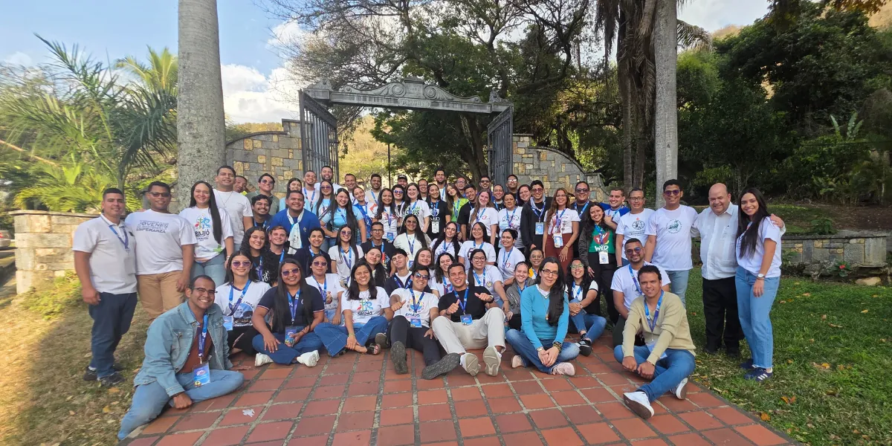
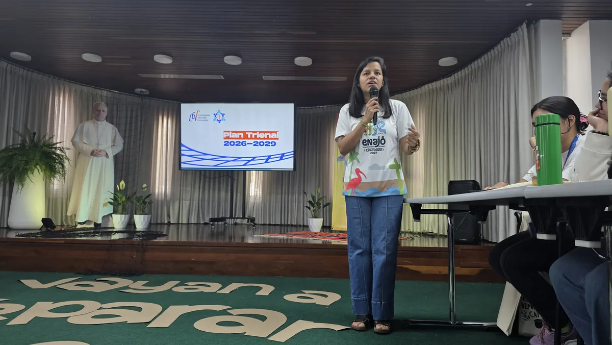
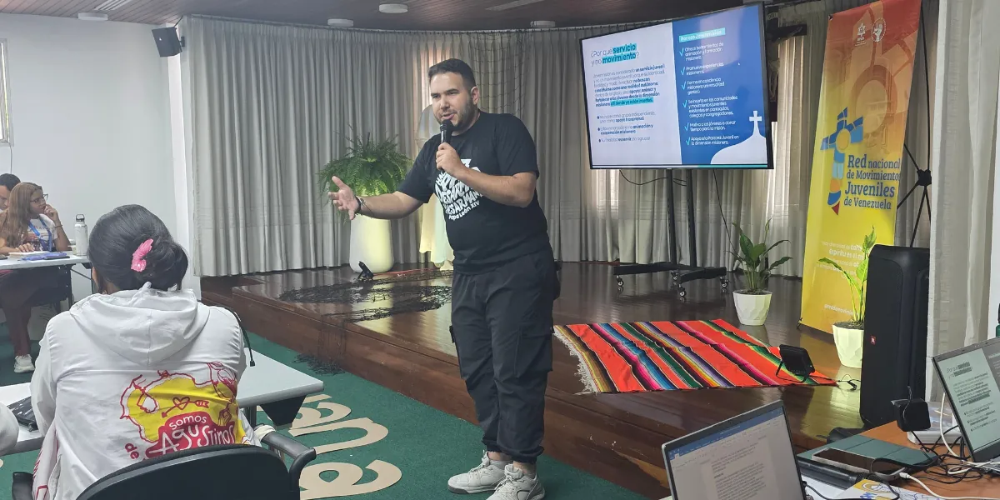
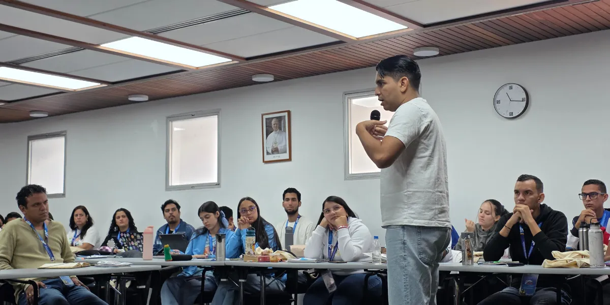
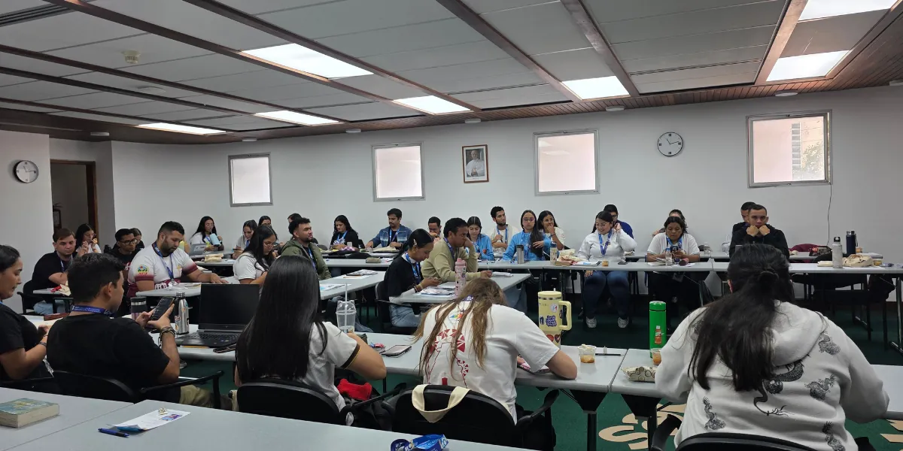
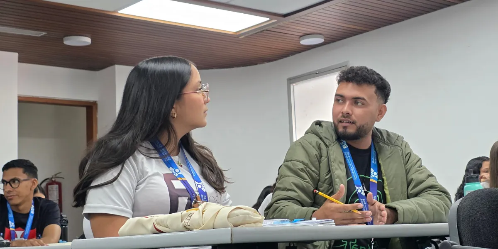
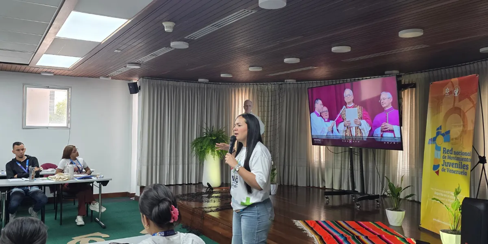

Asamblea Nacional de la Red de Movimientos Juveniles
Durante tres días, 27 movimientos juveniles del país se formaron, discernieron y proyectaron su misión juntos, con el llamado «Vayan a reparar las redes» y el Plan Trienal 2026-2029 como horizonte.

Datos del evento
- Fecha
- Tres días antes del 2 de marzo de 2026
- Hora
- No publicada en las notas oficiales.
- Modalidad y lugar
- Presencial · Lugar no indicado en las notas oficiales
- Organiza
- Centro de Laicos, Familia y Juventud, del SPEV de la Conferencia Episcopal Venezolana
- Estado
- Realizado
Cómo fue
La Asamblea Nacional de la Red de Movimientos Juveniles duró tres días de formación, discernimiento y proyección común. La directora del Centro, Saritza Roque, habló del llamado «Vayan a reparar las redes» y del Plan Trienal 2026-2029, inspirado en el camino de Emaús.
Participaron 27 movimientos, siete de ellos por primera vez, según la nota. Los participantes plantearon fortalecer la articulación entre movimientos como un proceso permanente y no solo un encuentro anual, y propusieron recuperar el Encuentro de Coordinadores Nacionales y realizar el primer Encuentro de Asesores del Centro.
Qué se hizo
- Se formaron y discernieron en común durante tres días.
- Plantearon fortalecer la articulación entre movimientos como un proceso permanente.
- Propusieron recuperar el Encuentro de Coordinadores Nacionales y hacer el primer Encuentro de Asesores del Centro.
Quién participó
Solo cargos públicos. Los nombres de laicos participantes y de menores no se publican.
- Saritza Roque, directora del Centro de Laicos, Familia y Juventud.
- Los responsables nacionales de la Red de Movimientos Juveniles y los movimientos participantes.
Cifras
- 27 movimientos, siete de ellos incorporados por primera vez, según la nota de la CEV del 2 de marzo de 2026.
Galería

Foto de grupo de los participantes de la Asamblea Nacional de la Red de Movimientos Juveniles. Crédito: CEV Medios, fuente: Centro de Laicos, Familia y Juventud del SPEV. 
Una mujer habla con micrófono ante una pantalla en la asamblea de la Red. Crédito: CEV Medios, fuente: Centro de Laicos, Familia y Juventud del SPEV. 
Un joven con micrófono expone ante los participantes. Crédito: CEV Medios, fuente: Centro de Laicos, Familia y Juventud del SPEV. 
Un joven con micrófono se dirige a los asistentes sentados en el salón. Crédito: CEV Medios, fuente: Centro de Laicos, Familia y Juventud del SPEV. 
Vista general del salón de la asamblea con los participantes en mesas. Crédito: CEV Medios, fuente: Centro de Laicos, Familia y Juventud del SPEV. 
Dos jóvenes conversan sentados con credenciales de la asamblea. Crédito: CEV Medios, fuente: Centro de Laicos, Familia y Juventud del SPEV. 
Una joven expone con micrófono ante una pantalla. Crédito: CEV Medios, fuente: Centro de Laicos, Familia y Juventud del SPEV.